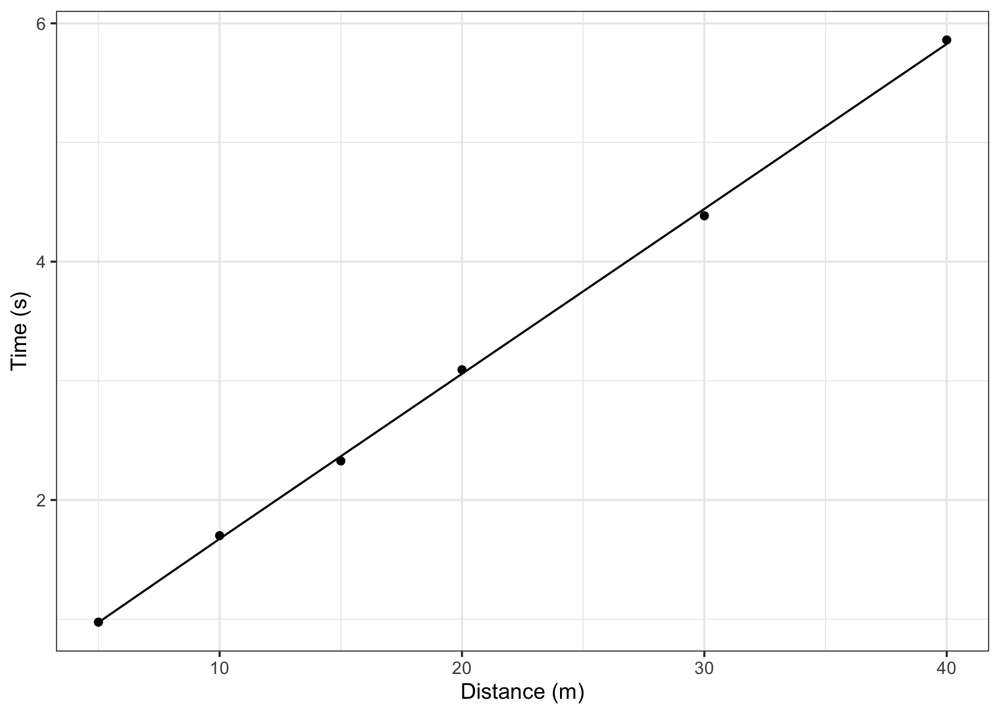
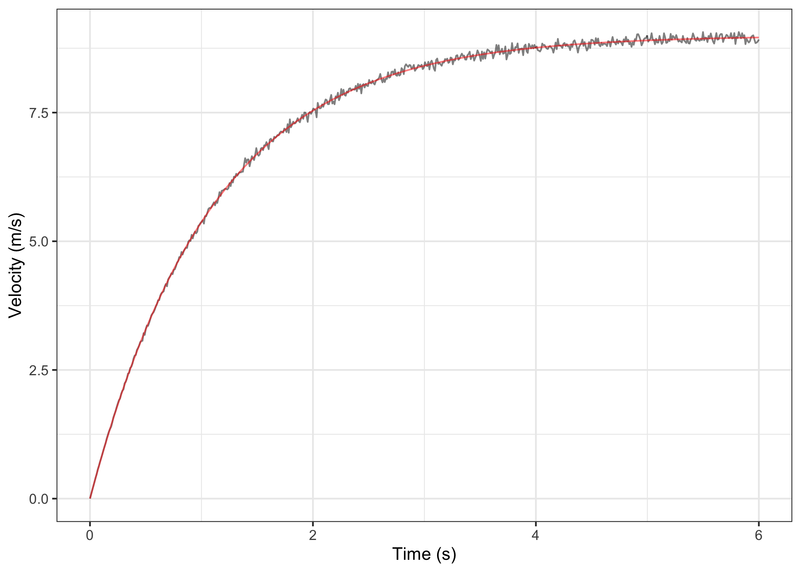

This package creates short sprint (<6sec) profiles using the split times or the radar gun data. Mono-exponential equation is used to estimate maximal sprinting speed (MSS), relative acceleration (TAU), and other parameters. These parameters can be used to predict kinematic and kinetics variables and to compare individuals.
Installation
You can install the development version from GitHub with:
# install.packages("devtools")
devtools::install_github("mladenjovanovic/shorts")
require(shorts)Examples
shorts comes with two sample data sets: split_times and radar_gun_data with N=5 athletes. Let’s load them both:
Profiling using split times
To model sprint performance using split times, distance will be used as predictor and time as target. Since split_times contains data for multiple athletes, let’s extract only one athlete and model it using shorts::model_using_split_times function:
kimberley_data <- filter(split_times, athlete == "Kimberley")
kimberley_profile <- shorts::model_using_split_times(
distance = kimberley_data$distance,
time = kimberley_data$time)
kimberley_profile$parameters
#> $MSS
#> [1] 7.226309
#>
#> $TAU
#> [1] 0.2911069
#>
#> $MAC
#> [1] 24.82356
#>
#> $PMAX
#> [1] 44.84568shorts::model_using_split_times returns an object with parameters, model_fit, model returned from stats::nls function and data used to estimate parameters. Parameters estimated using mono-exponential equation are maximal sprinting speed (MSS), and relative acceleration (TAU). Additional parameters computed from MSS and TAU are maximal acceleration (MAC) and maximal relative power (PMAX).
If you are interested in calculating average split velocity, use shorts::format_splits
shorts::format_splits(
distance = kimberley_data$distance,
time = kimberley_data$time)
#> split split_distance_start split_distance_stop split_distance
#> 1 1 0 5 5
#> 2 2 5 10 5
#> 3 3 10 15 5
#> 4 4 15 20 5
#> 5 5 20 30 10
#> 6 6 30 40 10
#> split_time_start split_time_stop split_time split_mean_velocity
#> 1 0 0.975 0.975 5.128205....
#> 2 0.975 1.701 0.726 6.887052....
#> 3 1.701 2.328 0.627 7.974481....
#> 4 2.328 3.093 0.765 6.535947....
#> 5 3.093 4.385 1.292 7.739938....
#> 6 4.385 5.86 1.475 6.779661....Let’s plot observed vs fitted split times. For this we can use data returned from shorts::model_using_split_times since it contains pred_time column, but we can also use shorts:predict_ family of functions.
ggplot(kimberley_profile$data, aes(x = distance)) +
theme_bw() +
geom_point(aes(y = time)) +
geom_line(aes(y = pred_time)) +
xlab("Distance (m)") +
ylab("Time (s)")
To plot predicted velocity over distance, use shorts:predict_
velocity_over_distance <- tibble(
distance = seq(0, 40),
pred_velocity = shorts::predict_velocity_at_distance(
distance,
kimberley_profile$parameters$MSS,
kimberley_profile$parameters$TAU)
)
ggplot(velocity_over_distance, aes(x = distance, y = pred_velocity)) +
theme_bw() +
geom_line() +
xlab("Distance (m)") +
ylab("Predicted velocity (m/s)")
Each individual can be modeled separately, or we can perform non-linear mixed model using nlme function from nlme package (Pinheiro et al., 2019). This is done using shorts::mixed_model_using_split_times:
mixed_model <- shorts::mixed_model_using_split_times(
data = split_times,
distance = "distance",
time = "time",
athlete = "athlete"
)
mixed_model$parameters
#> $fixed
#> MSS TAU MAC PMAX
#> 1 8.350701 0.5092097 16.39934 1.063064
#>
#> $random
#> athlete MSS TAU MAC PMAX
#> 1 John 8.112372 0.6308761 12.858900 1.2794754
#> 2 Kimberley 7.229267 0.2924022 24.723707 0.5284635
#> 3 Jim 9.222750 1.1688497 7.890449 2.6950022
#> 4 James 10.052620 0.2089077 48.119903 0.5250176
#> 5 Samantha 7.136494 0.2450125 29.127060 0.4371326shorts::mixed_model_using_split_times return the similar object, but parameters contain two elements: fixed and random.
Let’s plot predicted velocity over distance for athletes in the split_times data set:
velocity_over_distance <- merge(
mixed_model$parameters$random,
data.frame(distance = seq(0, 40))
)
velocity_over_distance$pred_velocity <- with(velocity_over_distance,
shorts::predict_velocity_at_distance(
distance = distance,
MSS = MSS,
TAU = TAU)
)
ggplot(velocity_over_distance, aes(x = distance, y = pred_velocity, color = athlete)) +
theme_bw() +
geom_line() +
xlab("Distance (m)") +
ylab("Predicted velocity (m/s)")
Profiling using radar gun data
The radar gun data is modeled using measured velocity as target variable and time as predictor. Individual analysis is performed using shorts::model_using_instant_velocity function. Let’s do analysis for Jim:
jim_data <- filter(radar_gun_data, athlete == "Jim")
jim_profile <- shorts::model_using_instant_velocity(
time = jim_data$time,
velocity = jim_data$velocity
)
jim_profile$parameters
#> $MSS
#> [1] 8.997255
#>
#> $TAU
#> [1] 1.099528
#>
#> $MAC
#> [1] 8.182834
#>
#> $PMAX
#> [1] 18.40576The object returned from shorts::model_using_instant_velocity is same as object returned from shorts::model_using_split_times. Let’s plot Jim’s measured velocity and predicted velocity:
ggplot(jim_profile$data, aes(x = time)) +
theme_bw() +
geom_line(aes(y = velocity), alpha = 0.5) +
geom_line(aes(y = pred_velocity), color = "red", alpha = 0.5) +
xlab("Time (s)") +
ylab("Velocity (m/s)")
Radar gun data can be modeled individually or using non-linear mixed model implemented in shorts::mixed_model_using_instant_velocity:
mixed_model <- shorts::mixed_model_using_instant_velocity(
data = radar_gun_data,
time = "time",
velocity = "velocity",
athlete = "athlete"
)
mixed_model$parameters
#> $fixed
#> MSS TAU MAC PMAX
#> 1 8.240711 0.4805574 17.14824 0.9900337
#>
#> $random
#> athlete MSS TAU MAC PMAX
#> 1 John 7.998751 0.6021399 13.283876 1.2040918
#> 2 Kimberley 7.205054 0.3003699 23.987266 0.5410454
#> 3 Jim 8.997225 1.0995085 8.182951 2.4731312
#> 4 James 9.999072 0.2003679 49.903555 0.5008733
#> 5 Samantha 7.003456 0.2004006 34.947270 0.3508743Let’s plot predicted acceleration over time (0-6sec) for athletes in the radar_gun_data data set:
acceleration_over_time <- merge(
mixed_model$parameters$random,
data.frame(time = seq(0, 6, length.out = 100))
)
acceleration_over_time$pred_acceleration <- with(acceleration_over_time,
shorts::predict_acceleration_at_time(
time = time,
MSS = MSS,
TAU = TAU)
)
ggplot(acceleration_over_time, aes(x = time, y = pred_acceleration, color = athlete)) +
theme_bw() +
geom_line() +
xlab("Time (s)") +
ylab("Predicted acceleration (m/s^2)")
Both shorts::model_using_instant_velocity and shorts::mixed_model_using_instant_velocityallow for using time_delay varaible, which is sometimes used with radar gun data (see Samozino, 2018 for more information).
References
Please refer to these publications for more information on short sprints modeling using mono-exponential equation, as well as on performing mixed non-linear models with nlme package:
Chelly SM, Denis C. 2001. Leg power and hopping stiffness: relationship with sprint running performance: Medicine and Science in Sports and Exercise:326–333. DOI: 10.1097/00005768-200102000-00024.
Clark KP, Rieger RH, Bruno RF, Stearne DJ. 2017. The NFL Combine 40-Yard Dash: How Important is Maximum Velocity? Journal of Strength and Conditioning Research:1. DOI: 10.1519/JSC.0000000000002081.
Furusawa K, Hill AV, and Parkinson JL. The dynamics of" sprint" running. Proceedings of the Royal Society of London. Series B, Containing Papers of a Biological Character 102 (713): 29-42, 1927
Greene PR. 1986. Predicting sprint dynamics from maximum-velocity measurements. Mathematical Biosciences 80:1–18. DOI: 10.1016/0025-5564(86)90063-5.
Pinheiro J, Bates D, DebRoy S, Sarkar D, R Core Team. 2019. nlme: Linear and nonlinear mixed effects models.
Samozino P. 2018. A Simple Method for Measuring Force, Velocity and Power Capabilities and Mechanical Effectiveness During Sprint Running. In: Morin J-B, Samozino P eds. Biomechanics of Training and Testing. Cham: Springer International Publishing, 237–267. DOI: 10.1007/978-3-319-05633-3_11.